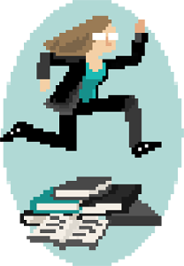

Hi, I'm Joyce!
I'm an experience designer, cartoonist, and all-around digital media witch.
I cofounded Symbolia, am a Fellow at American University, and speak internationally about media innovation. I design playful communications solutions and help media organizations tell better stories.
Let's work together!
CV
More about me

I'm an experience designer, cartoonist, and all-around digital media witch. I design playful communications solutions and help media organizations tell better stories.
In 2012 I cofounded Symbolia, an interactive digital magazine that published long-form journalism told through comics until 2015. I'm currently a fellow with the JoLT (Journalism Leadership Transformation) initiative at American University studying the intersection of game design and news media. I teach Digital Comics in the Comics MFA program at California College of the Arts. I've worked with clients from American Public Media to Bed Bath Beyond. For more, have a look at my CV here.
My work has appeared in Columbia Journalism Review, has been written about in FastCo., Poynter, and other outlets, and I have spoken about telling better stories at Game Developer's Conference, VOCER Innovation Fest, on The Verge's Top Shelf, and others. I talk a whole lot about journalism, collaboration, and playspaces, and I'm super interested in what different kinds of digital or social interactivity could do to make these things more exciting for audiences.
I have a BFA in Illustration and a forthcoming (December 2016) MA in Game Design. I'm an expert in Adobe CC (PS, AI, and InD), I'm fluent with HTML, CSS, Unity, and Twine, and I'm familar with Javascript, jQuery, C#, and Construct 2.
I draw, ride bikes, code, and sleep in Washington D.C. (for now).
If you're interested in working together, send me an email at joycer@teenyrobots.net telling me more about your project!